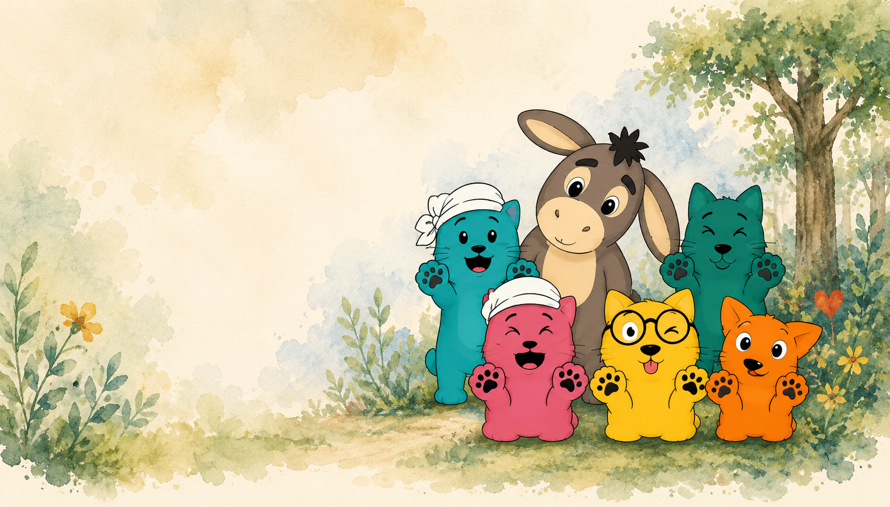
Mein Ansatz –
Verhalten hat immer einen Sinn. Familien brauchen Verständnis statt schneller Urteile. Veränderung wächst dort, wo Sicherheit entsteht, Beziehung trägt und klare, praktische Unterstützung hilft.
♡ Ich schaue hin. Ich gehe mit. Ich helfe, neue Wege zu finden.
Mein Ansatz –
Verhalten hat immer einen Sinn. Familien brauchen Verständnis statt schneller Urteile. Veränderung wächst dort, wo Sicherheit entsteht, Beziehung trägt und klare, praktische Unterstützung hilft.
♡ Ich schaue hin. Ich gehe mit. Ich helfe, neue Wege zu finden.
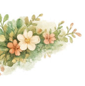
Meine Philosophie
Ich entschuldige kein verletzendes Verhalten. Aber ich möchte verstehen, was es schützt, was es ausdrückt oder was gerade fehlt.
Hinter jedem Verhalten steht eine Geschichte – oft eine, die von Überforderung, Angst, alten Erfahrungen oder unerfüllten Bedürfnissen erzählt.
Wenn diese Geschichte verstanden ist, werden neue Entscheidungen möglich. Nicht aus Druck, sondern aus Klarheit. Nicht aus Macht, sondern aus Verbindung.
Das Waldkätzchen-Konzept – ♡
Für echte Veränderung brauche ich einen umfassenden Blick. Darum arbeite ich mit fünf Perspektiven, die zusammen ein vollständiges Bild entstehen lassen.
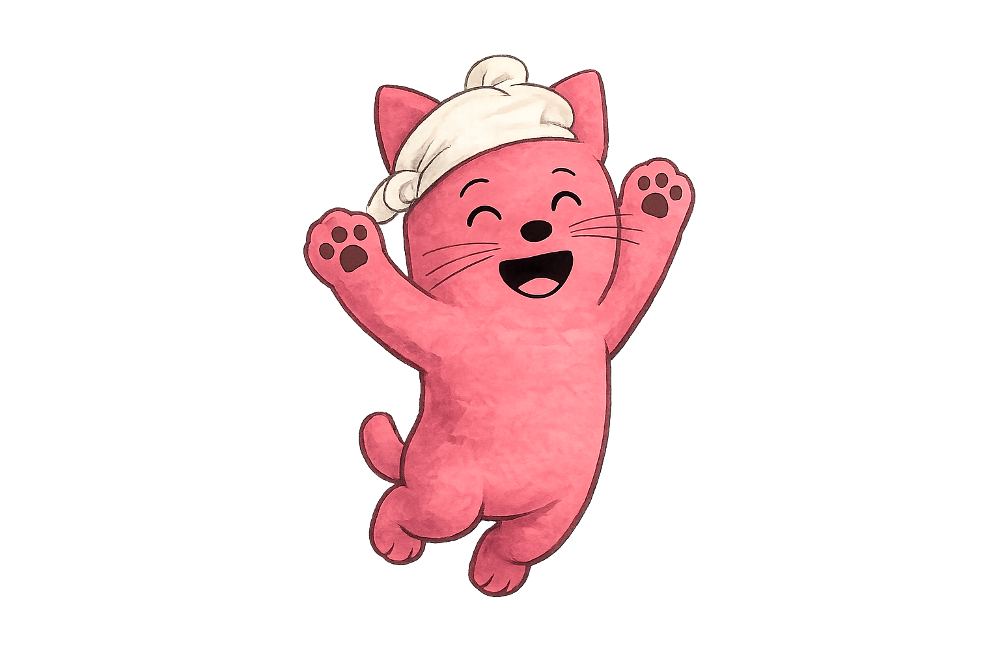
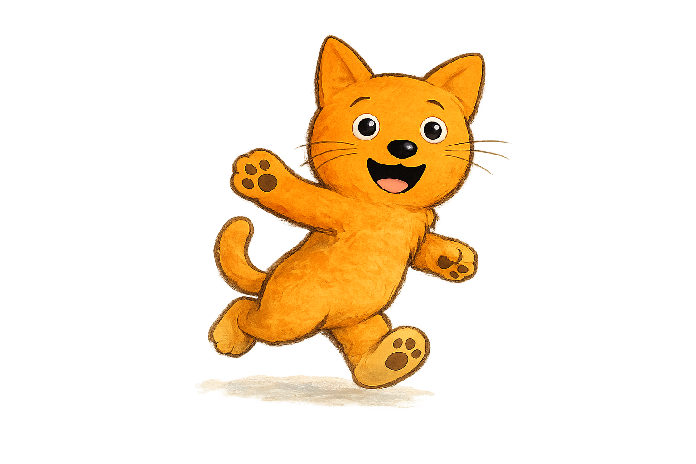
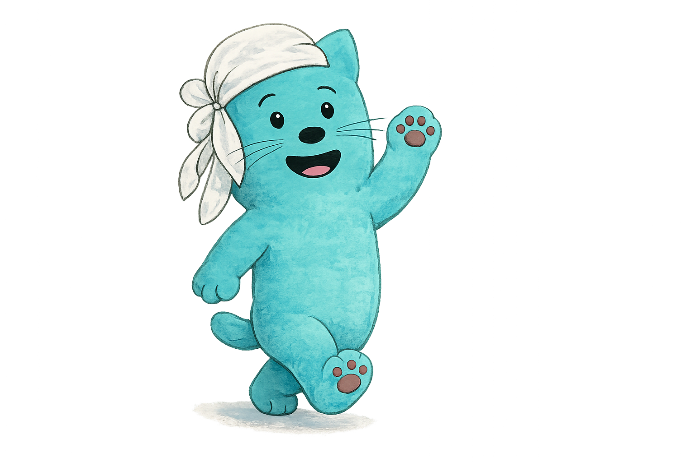
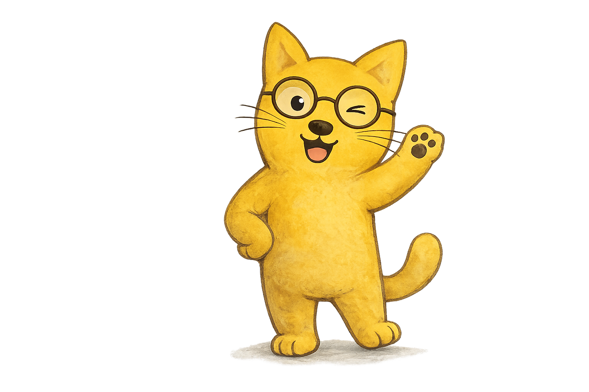
Die symbolische Welt – Bilder, die berühren und bewegen.
In meiner Arbeit nutze ich eine symbolische Welt, die hilft, Unsichtbares sichtbar zu machen und innere Prozesse greifbar zu erleben. Sie öffnet Räume für Gespräche, neue Perspektiven und echte Veränderung.
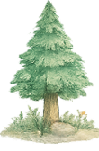
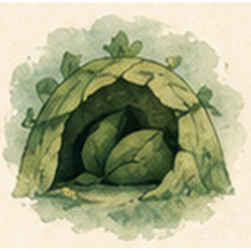
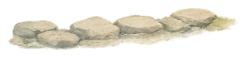
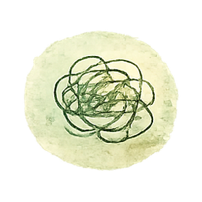
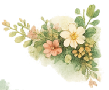
Die Tiere – Archetypen, die beim Erkennen helfen.
Jedes Tier steht für bestimmte Anteile und Muster, die alle in sich tragen. Sie helfen, Dynamiken zu verstehen – ohne zu bewerten.
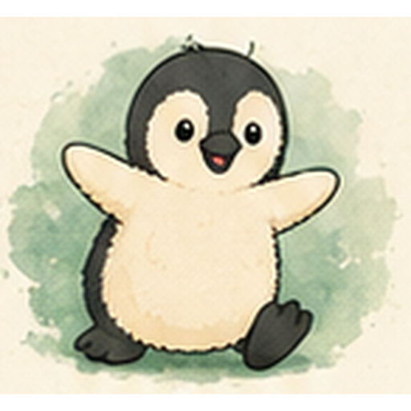
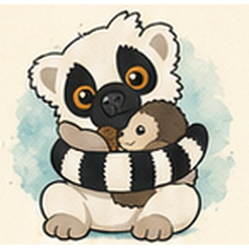
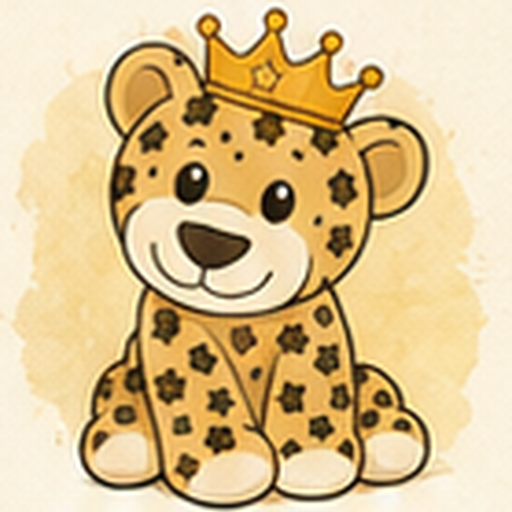
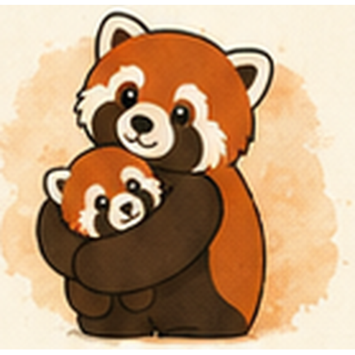
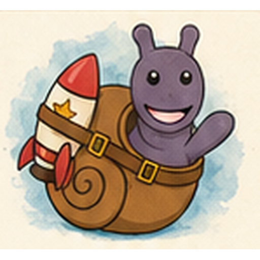

Wie ich arbeite
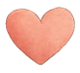
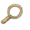
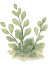
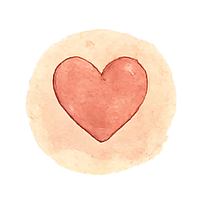
Ich arbeite alltagsnah, ehrlich und mit Herz.
Immer mit Respekt vor eurer Geschichte und euren Stärken. ♡
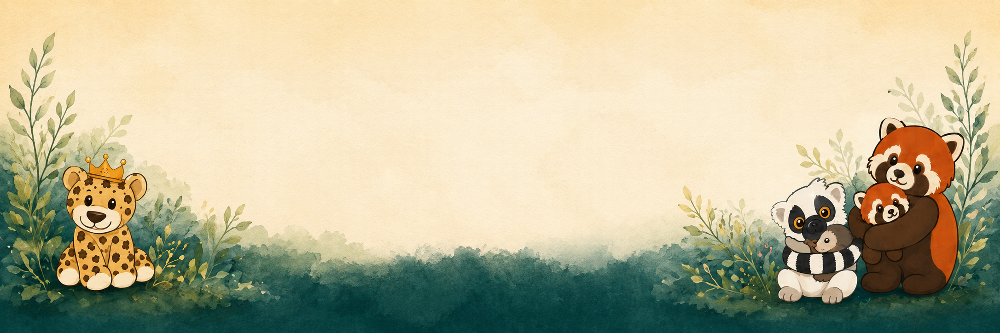
Ihr müsst den Weg nicht allein gehen.
Ich schaue mit euch hin – und finde neue Wege, die zu euch passen.
Kontakt aufnehmen
Schreib mir – ich melde mich zeitnah zurück.
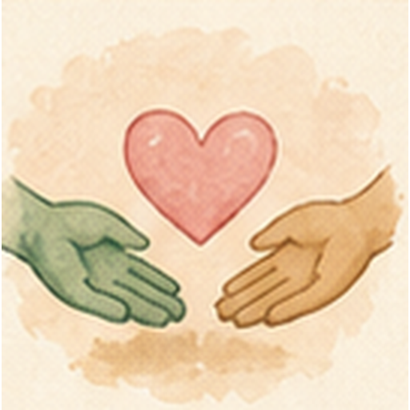
Danke für deine Nachricht!
Ich melde mich so bald wie möglich.
(Demo – es wurde noch nichts versendet.)